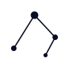
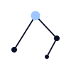
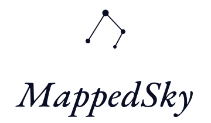
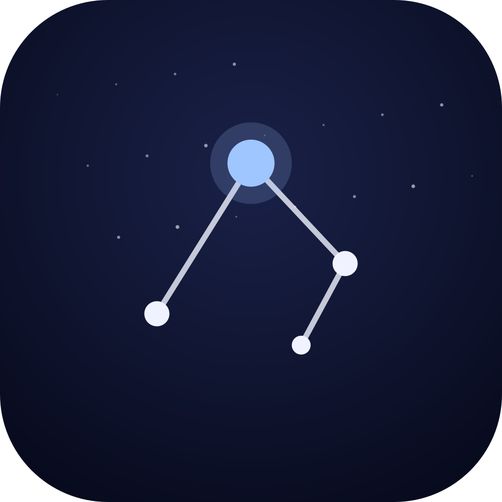
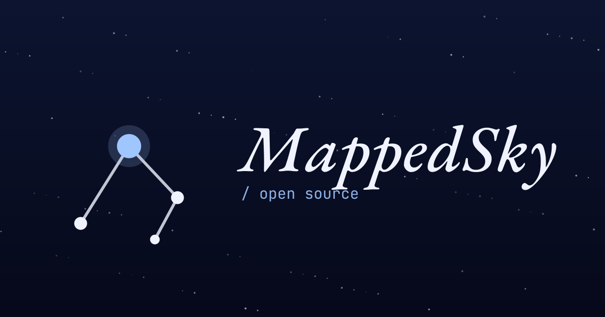

MappedSky / brand resourcesBrand Resources · v1
The MappedSky identity is a four-star asterism — the North Star at apex, three companions tracing a path eastward — paired with the name set in EB Garamond italic. Use the variants below for any context: dark or light surface, full color or single weight, big lockup or tiny favicon.
How the mark is drawn.
The North Star (Polaris) sits at (50, 22) — the optical apex. Three companions at α (20, 70), γ (80, 54), δ (66, 80) trace an open path through the cluster. Lines connect α→Polaris→γ→δ; the path is intentionally not closed.
Line weight is 1.8 units. Star radii: 5.5 (Polaris), 4.0 (α, γ), 3.0 (δ). Maintain these ratios at any size. For favicons below 24px, increase line weight to 2.6 for legibility.
The constellation alone — use when the audience already knows the brand.


Mark + wordmark. Use for headers, footers, and most surfaces.


Name on its own — EB Garamond italic, weight 500. Outline before exporting to print.
Favicon, app icon, social card.


Four colors total. Two surfaces, two highlights.
A short list. Trust your eye for the rest.
Use the accented mark on cream or pale surfaces for the strongest read.
Use the cream mark on dark surfaces. North-star accent only when there's room to breathe.
Leave at least 8 units of clear space on every side — equal to the diameter of the Polaris star.
Don't drop the mark on busy gradients or photos. Use a solid surface.
Don't rotate, mirror, or recolor the linework. The orientation carries meaning.
Don't use the mark below 16 px on the long edge. Below that, use the favicon instead.